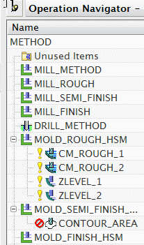
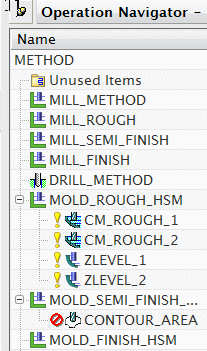

显示加工方法视图
-
点击导航器工具条上的加工方法视图
 。
。 -
点击+(加号)以展开节点。

加工方法视图是根据粗加工、精加工或者半精加工等切削方法来组织工序。定义这些方法的参数(比如内公差、外公差以及部件余量)都是根据加工方法对象来定义。
在本例中，程序由一个粗加工工序、两个半精加工工序以及两个精加工工序组成。
再次说明，程序顺序视图是唯一一个列出的工序顺序相关或很重要的视图。
点击导航器工具条上的加工方法视图  。
。
点击+(加号)以展开节点。

加工方法视图是根据粗加工、精加工或者半精加工等切削方法来组织工序。定义这些方法的参数(比如内公差、外公差以及部件余量)都是根据加工方法对象来定义。
在本例中，程序由一个粗加工工序、两个半精加工工序以及两个精加工工序组成。
再次说明，程序顺序视图是唯一一个列出的工序顺序相关或很重要的视图。